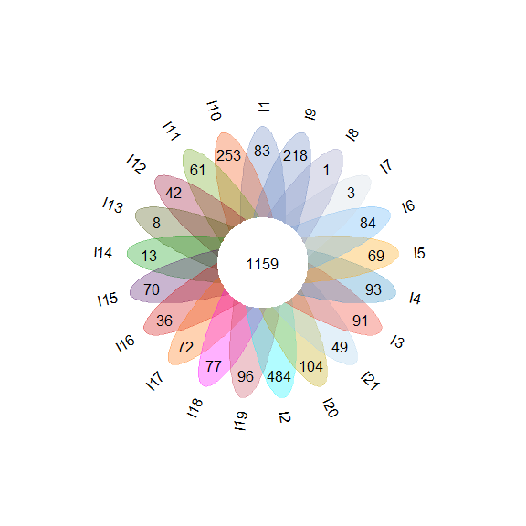

vennFlower

The goal of vennFlower is to create venn flower plot when have many samples/groups/genomes, show uniq and core feature num.
Installation
You can install the development version of vennFlower from GitHub with:
# install.packages("pak")
pak::pak("wanjinhu/vennFlower")
Example
This is a basic example which shows you how to run function
venn.flower:
library(vennFlower)
library(dplyr)
#>
#> Attaching package: 'dplyr'
#> The following objects are masked from 'package:stats':
#>
#> filter, lag
#> The following objects are masked from 'package:base':
#>
#> intersect, setdiff, setequal, union
library(plotrix)
my_col <- c(
"#6181BD4E", "#F348004E", "#64A10E4E", "#9300264E",
"#464E044E", "#049a0b4E", "#4E0C664E", "#D000004E",
"#FF6C004E", "#FF00FF4E", "#c7475b4E", "#00F5FF4E",
"#BDA5004E", "#A5CFED4E", "#f0301c4E", "#2B8BC34E",
"#FDA1004E", "#54adf54E", "#CDD7E24E", "#9295C14E",
"#6181BD4E", "#FDA1004E")
data("gene_absence")
p <- venn.flower(df = gene_absence, ellipse_col = my_col)

# If you want to save the venn flower results, use:
png("venn_flower.png", width = 10, height = 10, units = "in", res = 300)
p
dev.off()